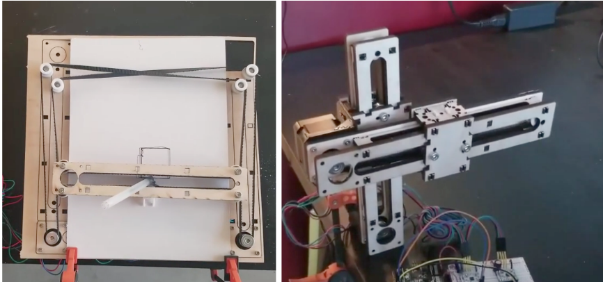
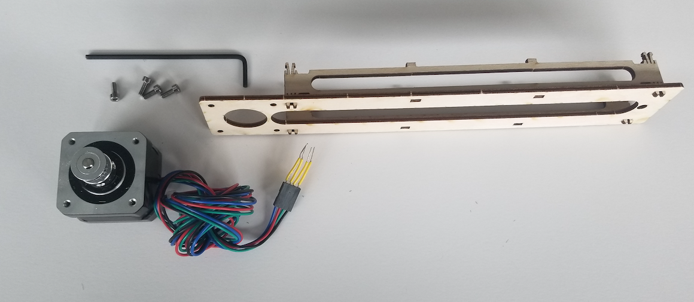
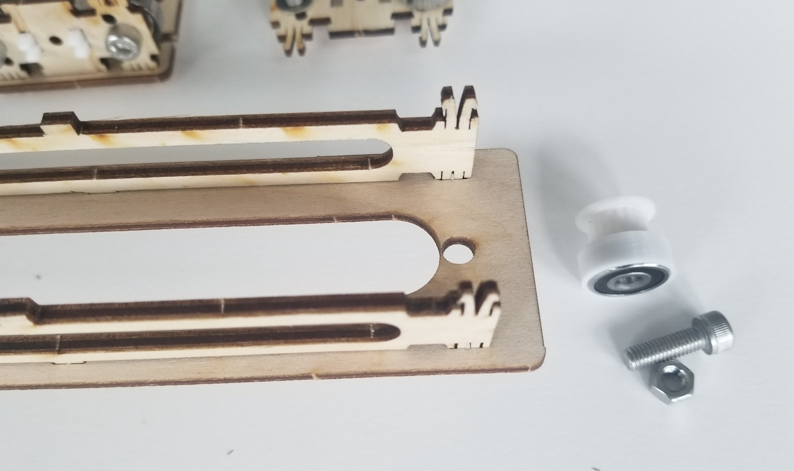
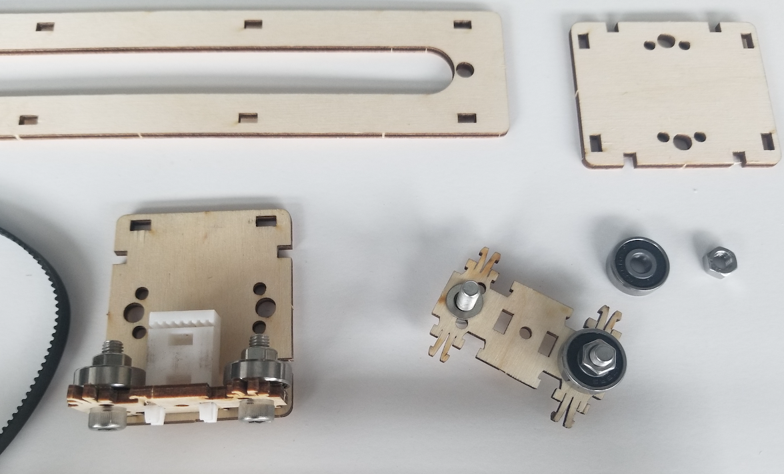
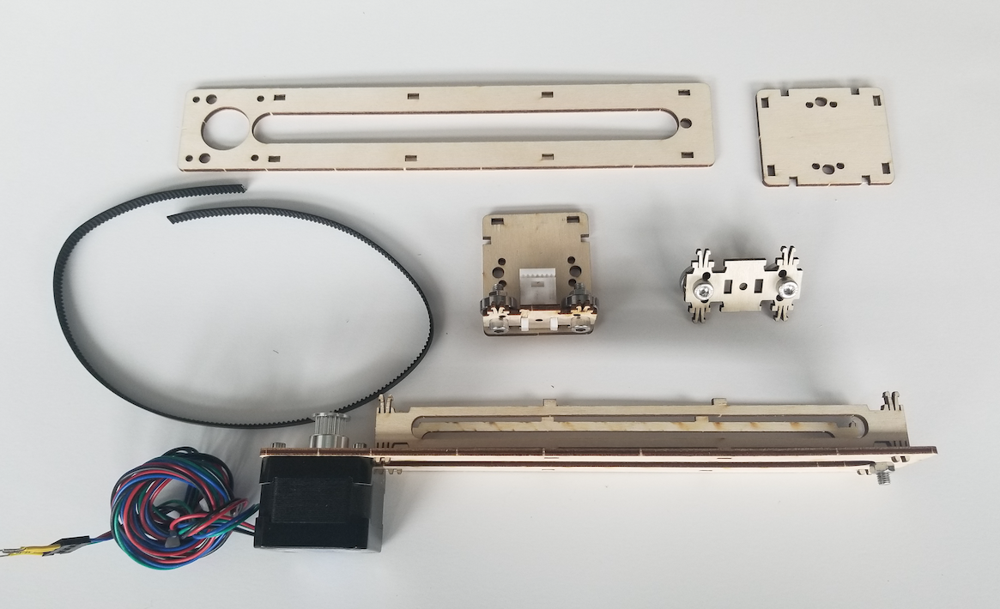
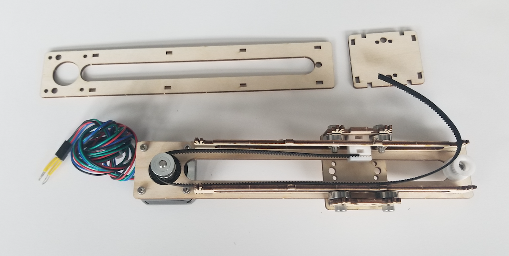

The lasercut parts, in combination with 3D printed parts included in the kit, can be used to create a range of different machines.
For example, an H-bot drawing machine (left) or two connected linear stages (right). The linear stage assembly on the right also makes use of 2 angle (L) brackets installed between each motor and the wood plate. One is used to anchor the assembly to the table (via orange clamp). The other connects one stage to the other.
Begin by separating the wooden parts. Attach 2 vertical beams to the horizontal piece that connects to the motor. Pre-flex flexures to increase compliance (make it easier to put together).
Press a bearing into the 3D printed pulley. Insert bolt into hole on far end of the assembly.
Assembly the carriage with 4 bearings. Mount bearings vertically or horizontally depending on where loads on the machine will need to be countered. Insert 3D printed timing belt clip.
Cut timing belt to length. Assemble 3/4 of carriage around the long plate.
Close timing belt loop by pressing into the 3D printed clip. Cover with the top long plate. Finally, install top plate of carriage.
Once assembled, you should be able to move the carriage along the axis with a little force. If there seems to be too much friction, try reducing it with the following steps: